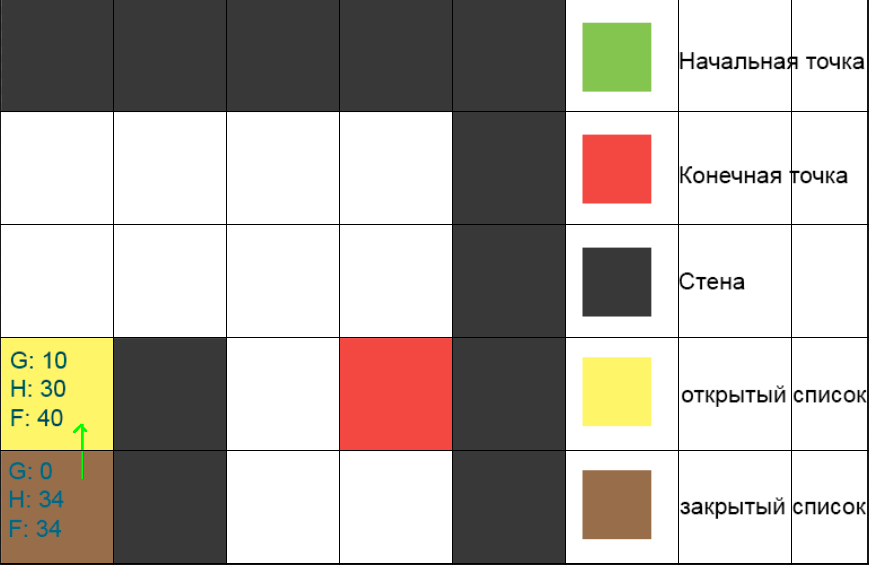
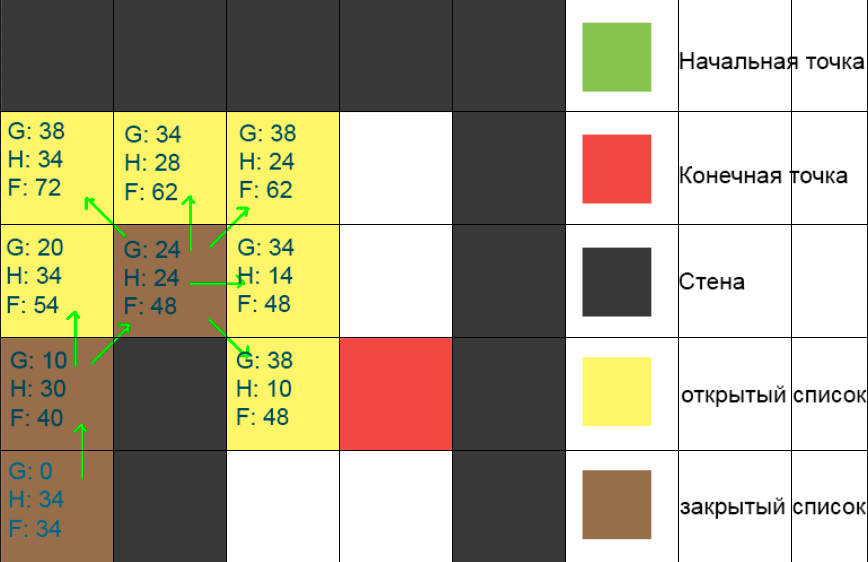
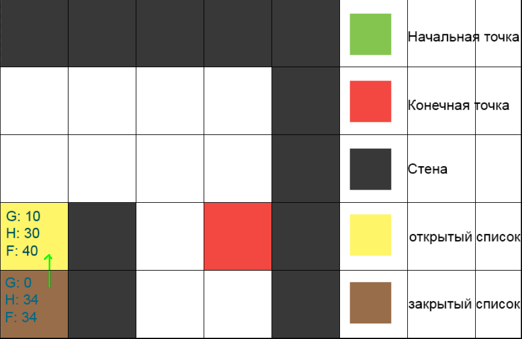
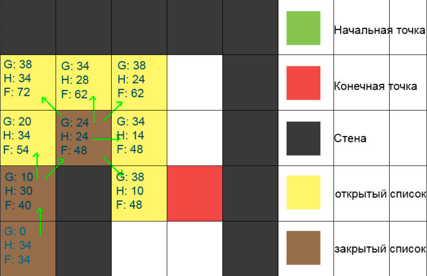

Оглавление
- Введение
- Проблематика
- Графы
- A*
- Обратный поиск
- Hashset
- MinHeap
- Регионы
- Подрегионы
- Эвристика
- Эвристика 2.0
- Итоги
Введение
Алгоритмы поисков путей в видеоиграх решают проблему нахождения кратчайшего пути из начальной точки в конечную. Быстрое нахождение такового является ключевым пунктом практически в любой RTS(real time strategy) игре.
Особенностью RTS игр является то, что игрок или ИИ контролирует множество персонажей постоянно, а не один раз за ход. На практике это значит, что система должна быть способна быстро просчитывать логику множества объектов (зачастую при очень большом количестве внешней и/или лишней информации).
Проблематика поиска путей
Для лучшего понимания проблемы предлагаю рассмотреть систему со следующими характеристиками.
- Игровой мир представляет собой поверхность, разделенную на клетки. На каждой клетке могут располагаться объекты, по которым перемещение как возможно (земля/дороги/…), так и невозможно(стены/скалы/вода). Клетка может иметь модификаторы скорости прохождения по ней. Например, передвижение по каменной кладке быстрее, чем передвижение по болоту.
- Персонажами выступают люди/животные/… , обладающие своим собственным (ИИ) либо внешним контроллером (игрок). Персонажи могут свободно перемещаться по проходимым клеткам и выполнять действия в зависимости от задач поставленных перед ними (перенос вещей, сбор ягод с куста, постройка стен и т. д.).
Для решения проблемы поиска путей, очень часто разработчиками используются давно придуманные алгоритмы (A*, Dijkstra, BFS, Flowfield, …). Каждый из них хорошо подходит для одних условий, и является неудачным выбором в других.
В каждом конкретном случае алгоритмы требуют соответствующих оптимизаций. Одной из самых важных модификаций является возможность определения существования пути без вычисления оного.
Прямой реализацией этого, может быть разделение карты на регионы, однако вычисление последних может быть крайне трудоемким процессом. Данная статья раскрывает потенциальные проблемы, которые могут поджидать разработчика, и предоставляет варианты их решения.
Графы
Для отображения игровой карты можно использовать различные структуры данных, но чаще всего они являются частными случаями графа. Граф суть множество вершин/узлов и множество рёбер, соединяющих вершины.
Например, для прямоугольных карт, представленных в виде таблицы клеток, множеством вершин будет являться множество всех клеток на этой карте. Каждая клетка может как иметь (если клетка проходима), так и не иметь (если клетка не проходима) набор ребер, соединяющих соседние клетки.
A* Pathfinding Algorithm
В рамках этой статьи я буду анализировать и улучшать довольно популярный алгоритм A* (A star), впервые опубликованный Питером Хартом, Нильсоном Нильсоном и Бертрамом Рафаэлем в 1968 году.
А* получает на вход граф карты, вершинами которого является структура Node, а также координаты начала и конца предполагаемого пути.
На выходе алгоритм возвращает список, состоящий из последовательных координат клеток, и являющийся кратчайшим путем из начальной точки в конечную, если такой существует.
Упомянутая выше структура Node выглядит следующим образом:
1 2 3 4 5 6 7 8 9 10 11 12 13 | public class Node { public int X, Y; public bool IsTraversable; public int gCost, hCost; public int fCost => gCost + hCost; public Node parent; public Node(int x, int y, bool isTraversable) { X = x; Y = y; IsTraversable = isTraversable; } } |
Рассмотрим код алгоритма.
1 2 3 4 5 6 7 8 9 10 11 12 13 14 15 16 17 18 19 20 21 22 23 24 25 26 27 28 29 30 31 32 33 34 35 36 37 38 | public static List<Node> GetPath(Node startNode, Node targetNode) { List<Node> openSet = new List<Node>(); List<Node> closedSet = new List<Node>(); openSet.Add(startNode); while (openSet.Count > 0) { Node currentNode = openSet[0]; for (int i = 1; i < openSet.Count; i++) { if (openSet[i].fCost < currentNode.fCost) { currentNode = openSet[i]; } } openSet.Remove(currentNode); closedSet.Add(currentNode); if (currentNode == targetNode) { return RetracePath(startNode, targetNode); } foreach (var neighbour in GetNeighbours(currentNode)) { if (closedSet.Contains(neighbour)) { continue; } int newCostToNeighbour = currentNode.gCost + GetDistance(currentNode, neighbour); bool isInOpenSet = openSet.Contains(neighbour); if (newCostToNeighbour < neighbour.gCost || !isInOpenSet) { neighbour.gCost = newCostToNeighbour; neighbour.hCost = Heuristic(neighbour, targetNode); neighbour.parent = currentNode; if (!isInOpenSet) { openSet.Add(neighbour); } } } } return null; } |
Поиск начинается с создания двух списков openSet и closedSet.
openSet содержит все вершины, которые алгоритм еще не просмотрел. closedSet содержит все просмотренные вершины.
Алгоритм последовательно проходится по openSet, выбирая вершины с минимальным значением fCost. Выбранные вершины удаляются из открытого списка и заносятся в закрытый.
Далее обрабатываются все соседние вершины относительно выбранной и заносятся в openSet, если их нет ни в одном, ни в другом списке, вычисляя при этом два важных значения:
gCost - суммарное расстояние от начального узла до рассматриваемого соседа hCost - значение эвристической функции относительно рассматриваемого соседа и конечной точки.
Когда очередная вершина оказывается конечной точкой, мы проходимся в обратном порядке от текущей вершины по её родителям и строим список, после чего “разворачиваем” его и получаем искомый путь.
Если в openSet закончились элементы, а путь при этом не был найден, то мы можем утверждать, что путь не существует.
Рассмотрим алгоритм пошагово на простом примере.
 



Данный алгоритм можно улучшить следующими способами.
- Обратный поиск
- Структуры данных
- Адаптация эвристики
Обратный поиск
1 2 3 4 5 6 7 8 9 | private static List<Node> RetracePath(Node startNode, Node currentNode) { List<Node> path = new List<Node>(); do { path.Add(currentNode); currentNode = currentNode.parent; } while (currentNode != startNode); path.Reverse(); return path; } |
На последнем шаге алгоритма, путь строится из конца в начало, последовательно проходя по родительским вершинам. Когда путь достроен, нам необходимо его развернуть в обратную сторону. Сложность функции List.Reverse() равна O(n), соответственно, чем длиннее путь, тем больше времени займет его разворот.
Этого маневра можно избежать, если мы изначально поменяем местами конечную точку с начальной. Тогда путь будет строиться из начала в конец в нужном порядке. Сам путь при этом будет в большинстве случаев идентичен.
Также этого можно добиться, если использовать на выходе не list, а stack. Суть не меняется, но, возможно, потребуется адаптация других элементов программы, запрашивающих этот путь.
HashSet
Алгоритм использует closedSet лишь для двух вещей:
- Проверки существования элемента - сложность O(n)
- Добавления нового элемента - сложность O(1)
Списки предназначены по большей части для удобной итерации по множеству элементов. Чтобы определить, существует элемент в списке или нет, мы проходимся по каждому элементу, пока не встретим искомый или список не закончится.
В нашем случае известно, что каждая вершина присутствует в этом множестве в единичном экземпляре. Для оптимизации работы с closedSet имеет смысл вместо List использовать HashSet.
При добавлении нового элемента в HashSet генерируется код (hash), по которому можно быстро найти элемент в дальнейшем. Процесс генерации такого кода занимает некоторое время, однако, не беря во внимание крайние случаи, сложности добавления и проверки существования элемента равны O(1).
HashSet является отличной альтернативой спискам в данном случае, так как количество элементов в closedSet может быть огромным, а следовательно отношение времени поиска в HashSet’е к поиску элемента по списку можно считать тривиальным.
1 | HashSet<Node> closedSet = new HashSet<Node>(); |
MinHeap
Также алгоритму необходимо итерировать по элементам openSet, чтобы найти элемент с минимальным fCost. Здесь нам на помощь приходит MinHeap.
При этом корень дерева является минимумом. А значит и нужда в поиске минимального элемента на каждой итерации алгоритма отпадает сама собой. Разумеется, структуру дерева нужно регулярно корректировать.
Реализация MinHeap обычно происходит с помощью одномерного массива. Зная индекс элемента в куче, можно вычислить индексы его родителя и детей:
parent: (i-1)/2 left child: 2*i+1 right child: 2*i+2
1 2 3 4 5 6 7 8 | public class Heap<T> where T : IHeapItem<T> { public int Count { get; private set; } private T[] _items; public Heap(int maxSize) { _items = new T[maxSize]; } } |
После каждого добавления/удаления элемента кучу следует заново отсортировывать, а значит мы должны иметь возможность сравнивать два элемента. Для этого напишем вспомогательный интерфейс, который будет имплементировать Node.
1 2 3 | public interface IHeapItem<T> : IComparable<T> { int HeapIndex { get; set; } } |
При сравнении двух Node нас интересует значение fCost.
1 2 3 4 5 6 7 8 9 10 11 12 13 14 15 16 17 18 19 20 21 22 23 | public class Node : IHeapItem<Node> { public int X, Y; public bool IsTraversable; public int gCost, hCost; public int fCost => gCost + hCost; public Node parent; public int HeapIndex { get; set; } public Node(int x, int y, bool isTraversable) { X = x; Y = y; IsTraversable = isTraversable; } public int CompareTo(Node nodeToCompare) { int compare = fCost.CompareTo(nodeToCompare.fCost); if (compare == 0) { compare = hCost.CompareTo(nodeToCompare.hCost); } return -compare; } } |
При добавлении элемент помещается в конец массива, после чего куча сортируется снизу-вверх, начиная с той ветки, куда был этот элемент помещен.
1 2 3 4 5 6 7 8 9 10 11 12 13 14 15 16 17 18 19 | public void Add(T item) { item.HeapIndex = Count; _items[Count] = item; BubbleUp(item); Count++; } private void BubbleUp(T item) { int parentIndex = (item.HeapIndex-1) / 2; while (true) { T parentItem = _items[parentIndex]; if (item.CompareTo(parentItem) > 0) { Swap (item, parentItem); } else { break; } parentIndex = (item.HeapIndex-1) / 2; } } |
При извлечении корня, а по совместительству минимального элемента, мы перемещаем элемент из конца кучи в начало и сортируем ее сверху вниз.
1 2 3 4 5 6 7 8 9 10 11 12 13 14 15 16 17 18 19 20 21 22 23 24 25 26 27 28 29 30 31 32 33 | public T RemoveFirst() { T first = _items[0]; Count--; _items[0] = _items[Count]; _items[0].HeapIndex = 0; BubbleDown(_items[0]); return first; } private void BubbleDown(T item) { while (true) { int leftChild = item.HeapIndex * 2 + 1; int rightChild = item.HeapIndex * 2 + 2; int swapIndex = 0; if (leftChild < Count) { swapIndex = leftChild; if (rightChild < Count && _items[leftChild].CompareTo(_items[rightChild]) < 0) { swapIndex = rightChild; } if (item.CompareTo(_items[swapIndex]) < 0) { Swap (item, _items[swapIndex]); } else { return; } } else { return; } } } |
Определение факта существования элемента в куче сводится к простой проверке по индексу.
1 2 3 | public bool Contains(T item) { return Equals(_items[item.HeapIndex], item); } |
В случае, когда мы пришли к одному и тому же узлу разными путями, необходимо обновить значения gCost и ссылку на предыдущий узел в сторону более короткого пути. Поскольку предполагается, что подобные изменения будут происходить только в меньшую сторону, то после вычисления новых значений кучу следует отсортировать вверх, и тогда её структура будет оставаться корректной.
1 2 3 4 5 6 7 8 9 10 11 12 | ... if (newCostToNeighbour < neighbour.gCost || !isInOpenSet) { neighbour.gCost = newCostToNeighbour; neighbour.hCost = Heuristic(neighbour, targetNode); neighbour.parent = currentNode; if (!isInOpenSet) { openSet.Add(neighbour); } else { openSet.UpdateItem(neighbour); } } ... |
Таким образом, использование MinHeap позволяет нам экономить время как на поиске элемента с минимальным fCost в openSet, так и на проверке существования элемента в нём.
Сравнение скорости
Проверка алгоритмов в данной части и последующих будет происходить на картах размеров 100х100 клеток. Время будет вычисляться по среднему значению 20 итераций, чтобы избежать возможных системных погрешностей.
Регионы
Рассмотрим следующую ситуацию.
Для человека это очевидно и без сложных вычислений, так как мы видим, что точки начала и конца находятся в двух разных "комнатах". Проблема очевидна, решение, что я в дальнейшем опишу, можно назвать интерпретацией теории о компонентах связности графа, я же буду называть это "Системой регионов".
Реализация алгоритма на примере цветов. В реальной системе вместо уникальных цветов можно присваивать клетке ссылку на соответствующий регион, в котором она содержится.
1 2 3 4 5 6 7 8 9 10 11 12 13 14 15 16 17 18 19 20 21 22 23 24 25 | public static void FillMap() { for (int x = 0; x < MapWidth; x++) { for (int y = 0; y < MapHeight; y++) { var n = NodeAt(x, y); if (n.IsTraversable && n.rColor == ReplacementColor) { FloodFillFrom(n, GetRandomColor()); } } } } private static void FloodFillFrom(Node startNode, Color targetColor) { Queue<Node> nodeQueue = new Queue<Node>(); nodeQueue.Enqueue(startNode); startNode.rColor = targetColor; while (nodeQueue.Count != 0) { foreach (var n in nodeQueue.Dequeue().GetNeighbours()) { if (n.IsTraversable && n.rColor == ReplacementColor) { n.rColor = targetColor; nodeQueue.Enqueue(n); } } } } |
Имея в арсенале новую структуру данных, очень просто можно решить показанную выше проблему. Достаточно перед запуском алгоритма делать проверку на совпадение клеток одному и тому же региону, и если таковая не прошла, можно быть уверенными, что пути не существует.
1 2 3 | if (startNode.Region != targetNode.Region) { return null; } |
К сожалению, подобная реализация совершенно не подходит для игр\ситуаций, когда карта обновляется достаточно часто, и мы не можем позволить себе при каждом добавлении\удалении препятствия пересчитывать все регионы по новой. Не думаю, что нужно объяснять насколько это трудоемкий процесс - пробегаться по каждой клетке карты при всяком случае, особенно на достаточно больших картах.
Здесь нам на помощь приходит следующая структура данных, которую я прозвал Subregion.
Подрегионы
Обобщая выше описанное, мы имеем:
Имея на руках систему подрегионов, мы можем поступить следующим образом:
- Определяем, какой node изменил свое состояние проходимости
- Находим subregion в котором содержится этот node
- Удаляем найденный subregion, стираем информацию о нем у соседних подрегионов
- Заново запускаем Flood Fill алгоритм внутри чанка и определяем новых соседей
- Запускаем Flood Fill по всем подрегионам и определяем новые регионы.
Если вышло так, что появившийся subregion имеет своими соседями подрегионы из разных регионов - производим слияние меньшего региона с большим.
Таким образом, мы очень значительно сокращаем количество времени на перерасчет регионов. Разумеется, в данном разделе, а также в последующих этот уровень абстракции можно увеличивать при необходимости (region -> subregion -> … -> sub…subregion -> node).
Эвристка
Теперь, когда у нас есть система регионов и подрегионов, продолжим нашу работу над ускорением поиска пути.
Эвристический алгоритм — алгоритм решения задачи, включающий практический метод, не являющийся гарантированно точным или оптимальным.
Исходя из данного определения, я предупреждаю - описанные ниже адаптации A* будут в некоторых случаях выполняться намного быстрее оригинала, однако путь может выйти как минимально коротким, так и несколько больше оптимального. У всего есть своя цена, как известно.
Немного отвлечёмся и подумаем о следующей ситуации. Вы молодой человек проживающий в Санкт-Петербурге в Петроградском районе, и тут вы решили навестить родителей, проживающих в Москве. Каковы ваши рассуждения о том, как попасть с вашего удобного дивана в Питере на не менее удобный в Москве?
Скорее всего, ваши рассуждения будут не: я сделаю один шаг вперед, два шага влево, открою дверь, сделаю два шага до лифта, …, открою дверь квартиры в Москве; верно?
Мы рассуждаем абстрактнее: я нахожусь в Питере, из Питера я могу попасть в Москву на самолете. я живу в петроградском районе, значит, я сяду в метро здесь и выйду на Московской, …
Думаю идею вы поняли - абстракция. Именно этого не хватает стандартной реализации A*. Например, критичность данной проблемы можно увидеть на следующей визуализации.


Алгоритм не знает о том, что перед ним находится коридор, по которому ему следует идти. И хотя его деятельность может показаться нелогичной, спешу вас уверить - она абсолютно корректна.
Мы не можем предоставить алгоритму информацию о том, что перед ним спираль и нужно следовать внутрь ее, так как это довольно сложно вычислить, озираясь на все прочие возможные случаи. Однако мы можем предоставить алгоритму тот самый коридор, внутри которого он будет искать кратчайший путь.
Здесь мы и используем наши subregion’ы. Идея проста - мы ищем путь не на уровне клеток, но на уровне подрегионов. Найдя последний, передаем его стандартному алгоритму и разрешаем ему рассматривать лишь клетки, которые содержатся в этом коридоре.
1 2 3 4 5 6 7 8 9 10 11 12 13 14 | ... List<Subregion> subregions = AStarSubregionSearch.GetPath(startNode.subregion, targetNode.subregion); Node[] possibleNodes = new Node[MapWidth * MapHeight]; foreach (Subregion s in subregions) { foreach (Node n in s.nodes) { possibleNodes[n.X + n.Y * MapHeight] = n; } } ... foreach(var neighbour in GetNeighbours(currentNode)) { if (closedSet.Contains(neighbour) || possibleNodes[neighbour.X + neighbour.Y * MapHeight] == null) { continue; } ... |
И хотя технически, поиск по подрегионам такой же “глупый”, как и обычный поиск. Перед ним лежит значительно меньше subregion’ов, которые нужно просмотреть.
Эвристика 2.0
1 2 3 | ... public int fCost => gCost + hCost; ... |
Весь алгоритм до этого момента держался на минимизации fCost, где gCost - длина пути от текущей рассматриваемой точки до начала пути, hCost - эвристически вычисленное значение расстояния от рассматриваемой точки до конца предполагаемого пути.
Следующая модификация алгоритма зиждется на добавлении ещё одного слагаемого при вычислении fCost, - rCost расстояние от рассматриваемой точки до определенной точки в следующем по счету подрегионе в упомянутом выше коридоре.
1 | public int fCost => gCost + hCost + rCost; |
Перед тем как мы сможем это сделать, стоит определиться, какую точку в подрегионе выбирать для этого. Поэкспериментировав. я пришел к следующему варианту:
1 2 3 4 5 6 7 8 9 10 11 12 13 14 15 16 17 18 19 20 21 | public class Subregion { ... public void CalculateAverageCoordinates() { int minSqrDistance = Int32.MaxValue; foreach (var node in nodes) { int currSqrDistance = 0; foreach (var border in nodes) { int dX = (border.X >= node.X) ? border.X - node.X : node.X - border.X; int dY = (border.Y >= node.Y) ? border.Y - node.Y : node.Y - border.Y; currSqrDistance += (int) (Mathf.Pow(dX, 2) + Mathf.Pow(dY, 2)); } if (currSqrDistance < minSqrDistance) { minSqrDistance = currSqrDistance; avgX = node.X; avgY = node.Y; } } } ... |
Теперь rCost - расстояние от рассматриваемой точки до точки с координатами (avgX, avgY) следующего по порядку subregion’а. Эта точка обладает минимальным расстоянием до всех других точке в этом подрегионе.
Чтобы использовать rCost и следить за тем, какой подрегион у нас следующий, необходимо немного модифицировать прежний код. На самом деле модификаций нужно проделать намного больше, но чтобы не мучить читателя полотнами кода, я не стану указывать все.
1 2 3 4 5 6 7 8 9 10 11 12 13 14 15 16 17 18 19 20 21 22 23 24 25 26 27 | foreach (var neighbour in GetNeighbours(currentNode)) { if (closedSet.Contains(neighbour)) { continue; } if (subregions.Count != 0 && subregions.Peek().child == neighbour.subregion) { subregions.Pop(); } if (closedSet.Contains(neighbour) || (subregions.Count != 0 && !subregions.Peek().nodes.Contains(neighbour))) { continue; } int newCostToNeighbour = currentNode.gCost + GetDistance(currentNode, neighbour); bool isInOpenSet = openSet.Contains(neighbour); if (newCostToNeighbour < neighbour.gCost || !isInOpenSet) { neighbour.gCost = newCostToNeighbour; neighbour.hCost = Heuristic(neighbour, targetNode); neighbour.rCost = GetDistance(neighbour, PathGrid.NodeAt(neighbour.subregion.child.avergX, neighbour.subregion.child.avergY)); neighbour.parent = currentNode; if (!isInOpenSet) { openSet.Add(neighbour); } } } |
Это нововведение дает следующие результаты:

Итоги
Уверен, вам понравились gif’ки выше, поэтому я подготовил еще ряд.
A* - стандартный A* A* + DS - A* с использованием структур Subregion search - A* с поиском по подрегионам rCost search - A* с rCost


A* - 3112 ms
A* + DS - 26.43 ms

Subregion search - 35.68 ms
rCost search - 10.91 ms
A* - 752 ms
A* + DS - 19.37 ms
Subregion search - 4.90 ms
rCost search - 1.78 ms

A* - 4252 ms
A* + DS - 45.12 ms
Subregion search - 9.26 ms
rCost search - 3.13 ms
Спасибо за чтение.
Vladimir Korzh, 2020
Отдельное спасибо Tynan Sylvester за вдохновение и видео о его "Region System" - link